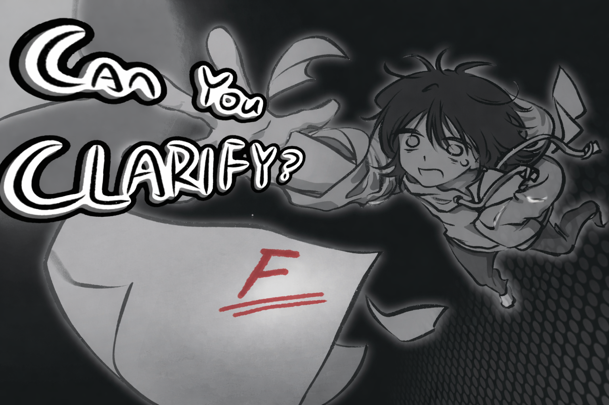
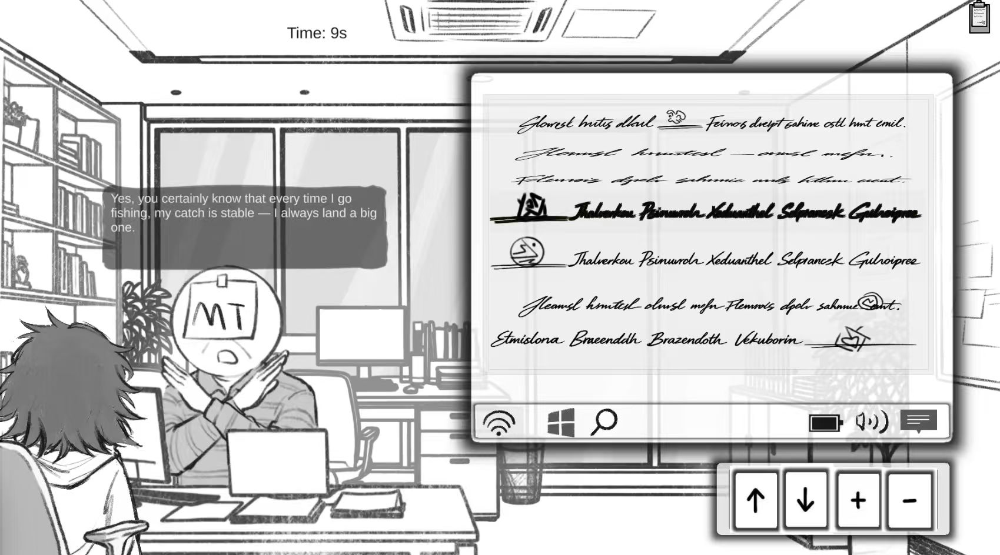

Ludum Dare 59


This project was built during Ludum Dare 59 under strict time constraints, and it demonstrates my ability to ship complete, player-facing systems quickly while collaborating across design, art, and engineering.
I implemented core gameplay flow, including tutorial onboarding, timed interaction sequences, branching progression, multi-step validation, retries, and fail/success transitions. I also built data-driven interaction structures so the team could rapidly iterate on dialogue, player choices, state changes, and progression logic as design evolved.
Alongside gameplay systems, I integrated layered visual elements and dynamic UI states to improve readability and feedback. I added sound effects and coordinated audiovisual cues with gameplay timing to improve pacing, responsiveness, and clarity.
Because this was a fast-paced game jam environment, I also contributed heavily to technical stability: merge conflict resolution, regression fixes, gameplay state debugging, playtesting support, and cross-discipline problem-solving.
Game concept: you play a stressed student called into an advisor's office to fix a failing paper in real time. The core loop asks players to read facial expressions and body language, decode symbols from messy notes, and make correct interaction choices before the advisor loses patience. The tone is comedic, but the interaction design depends on careful observation, timing, and consequence management.
Controls: mouse click to interact. In-game tutorial included. For the most up-to-date build, use the second zip in the download files.
This project strengthened both my technical implementation skills and my ability to deliver polished, collaborative results under high pressure and short iteration cycles.